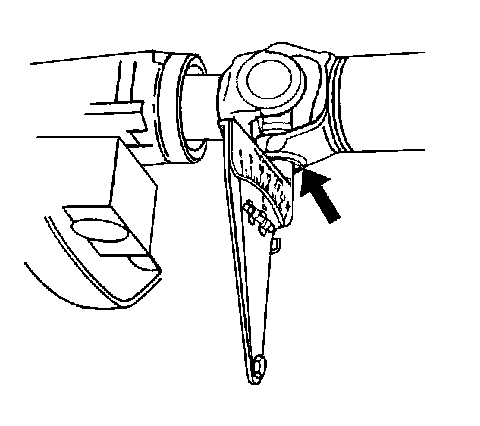

Propeller Shaft Phasing Inspection
Propeller Shaft Phasing Inspection
Tools Required
J 23498-A Driveshaft Inclinometer, or equivalent
Important: This inspection procedure is intended to inspect propeller shaft systems with 2 or 3 U-joints only.
Correct phasing of a propeller shaft refers to the relative alignment of the U-joint yoke flanges to each other to provide proper cancellation of the U-joints. The yokes should be directly aligned to within the range specified in this procedure.
1. Raise and support the vehicle. On vehicles with solid axles, ensure that the drive axle is supported at ride height-vehicle body supported by suspension components. Ensure the wheels are free to rotate. Refer to Lifting and Jacking the Vehicle (Service and Repair) .
2. Place the transmission in NEUTRAL.
3. Clean any corrosion or foreign material from the U-joint bearing caps.
4. Remove any of the U-joint bearing cap snap rings that may interfere with the correct placement of the J 23498-A , or equivalent.

5. Inspect the prop shaft for proper phasing.
1. Rotate the prop shaft or shafts to align the shaft yoke flanges vertically.
2. Install the J 23498-A , or equivalent to the lower U-joint bearing cap of the rear U-joint of the shaft. The J 23498-A , or equivalent should be aligned perpendicular to the propeller shaft.
3. Set the indicator line on the J 23498-A , or equivalent to 15, the horizontal reference.
4. Rotate the propeller shaft slightly to center the bubble to the indicator. The U-joint is now vertical.
5. Without disturbing the setting on the J 23498-A , or equivalent, remove the J 23498-A , or equivalent from the rear U-joint bearing cap.
6. Install the J 23498-A , or equivalent to the lower U-joint bearing cap of the front U-joint of the same shaft.
7. Observe and record the reading of the front U-joint with the J 23498-A , or equivalent still set to 15, the horizontal reference.
6. For prop systems with 3 U-joints, rotate the shafts 1/4 turn and repeat steps 5.1-5.7 for the other prop shaft.
7. If the difference between the front and rear U-joints of a welded yoke propeller shaft is 3 degrees or less, the propeller shaft is properly phased.
8. If the difference between the front and rear U-joints of a welded-yoke propeller shaft is greater than 3 degrees, the propeller shaft is either constructed improperly, or damaged from twisting. Refer to Propeller Shaft Phasing Correction (Propeller Shaft Phasing Correction) .
9. If the difference between the welded yoke and slip yoke of a propeller shaft is 1.5 degrees or less, the prop shaft is properly phased.
10. If the difference between the welded yoke and slip yoke of a propeller shaft is greater than 1.5 degrees, the propeller shaft is either constructed improperly, or damaged from twisting. Refer to Propeller Shaft Phasing Correction (Propeller Shaft Phasing Correction) .